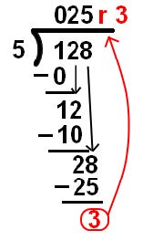

Just like you learned in your math class, integers are the set of all the positive and negativenumbers with no decimal. Whole numbers and the counting numbers are including in the integers.In computer science, we often integers by their abbreviation, int (or ints), after the name of the built-in function int( ). We can perform any arithmetic operation on integers in Python (but we need a print statement to see the result).
You will notice from the above examples, the answer stayed as an integers for all except thedivision. Even if the division of two integers results in a whole number answer, Python print out adecimal by default. Keep in mind that Processing works differently than other developmentenvironments, in that any operations by integers the answer will always be an integer (even if thereal answer isn't). For example, 3 / 9 in Processing would yield an answer of 0. Processing is usefulfor graphics and interactivity, but it is not useful for numerical calculations.
The basic arithmetic operators that are included in Python by default:
Exponentiation : x to the power of y
x ** y
Negation:negative x
-x
Floor Division: the whole number answer after integer division of x by y
x // y
Consider the long division example:

To yield the remainder for the above example, we use
Modulo: remainder after integer division of x by y
x % y
Compare the floor division and modulo to integer division:
For the above examples,
25.6 = 25 remainder 3
The different operators allows us to write equivalent values in different ways.
So far we have only learned about how to deal with integers in Python. If you refer back to thediagram of numbers at the top, we need a way to express values that have a decimals. In computerscience, we call these numbers floating-point data (or floats). Floating point numbers can have up to 17 digits of precision (decimals).
Any number with a decimal is a floating-point number. For example:
You can see that even a whole number, like 42, can be written as a float. You don't even need to puta 0 after the decimal for the number to become a float.
We can also write floats in scientific notation. For example, the speed of light is 3x10^8 m/s, but wecan write it as
If you use an operator with an integer and a float, the result will be a float: